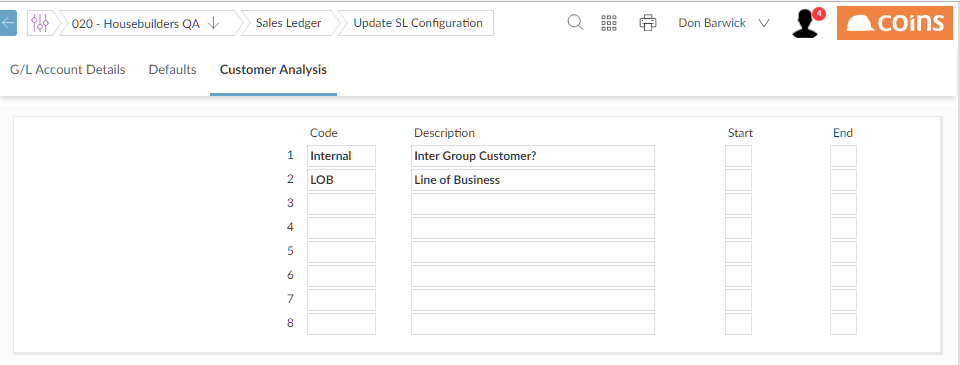

To define the analysis sets for a module:
- Go to the module configuration procedure (for example, SL Configuration).
-
Click the Analysis Set tab (some modules may have more than one group of analysis sets, as shown in the list above, so there may be more than one tab).
 - Enter codes and descriptions for each analysis set; the descriptions are the field labels that
- If you want to populate an analysis set for a new record automatically from the record's code, enter the start and end positions in the code (see Populating Analysis Sets Automatically).
- Click
 .
.